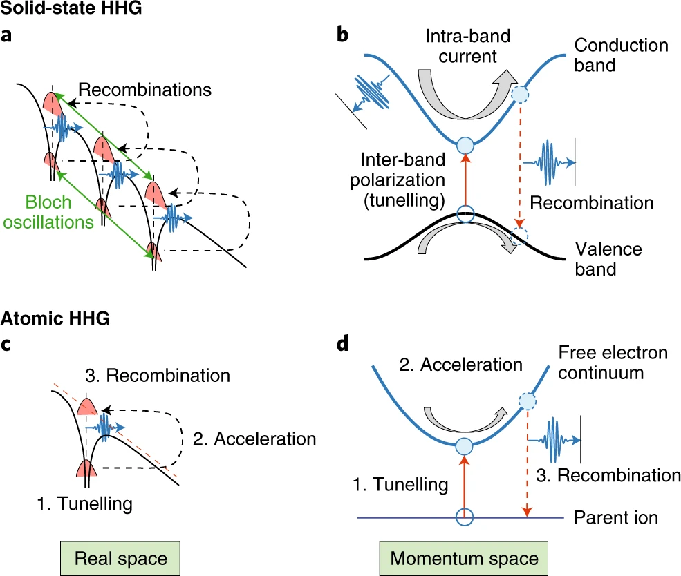
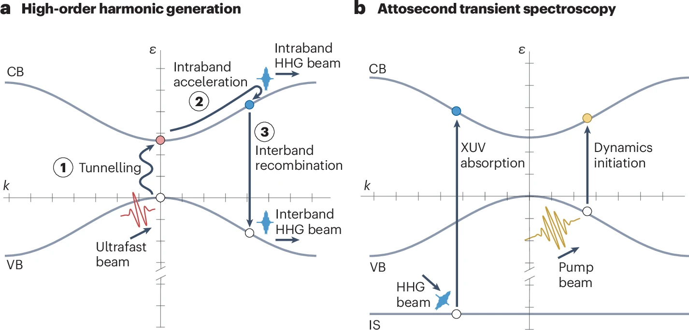
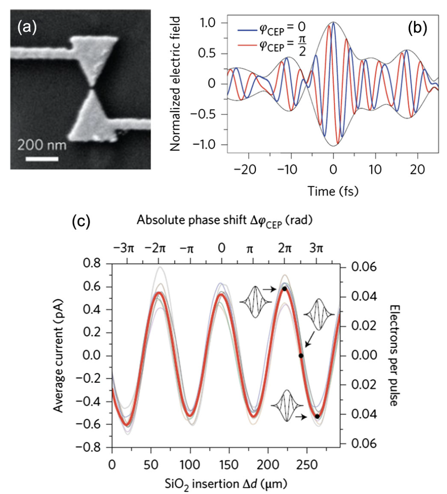
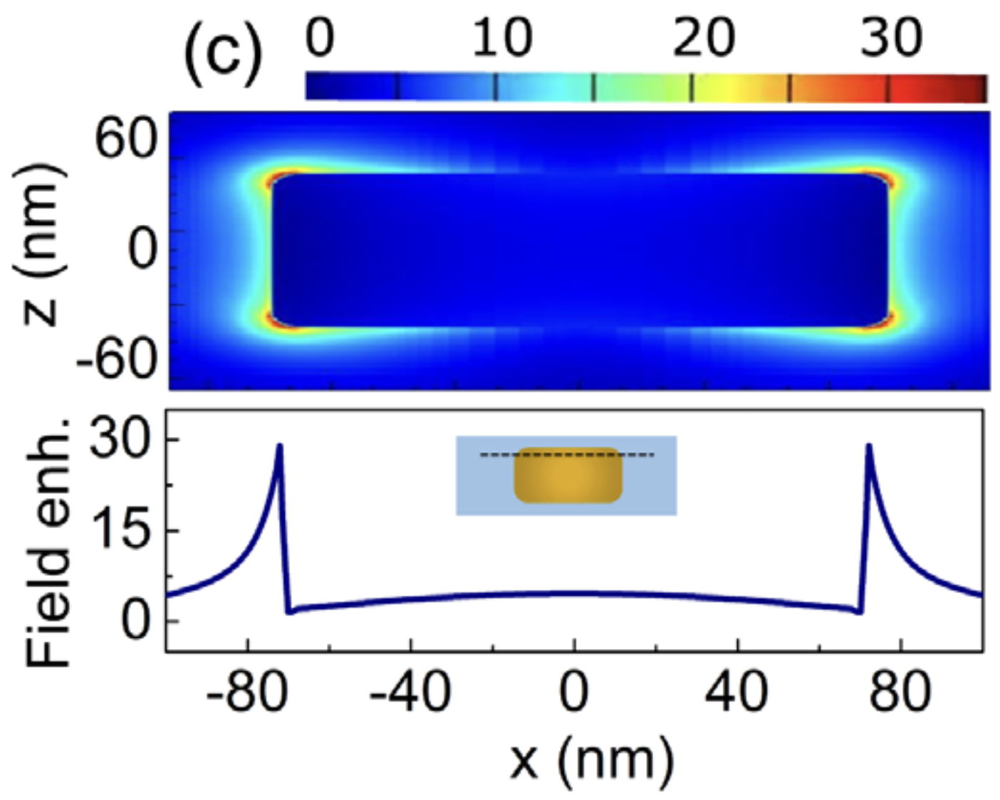
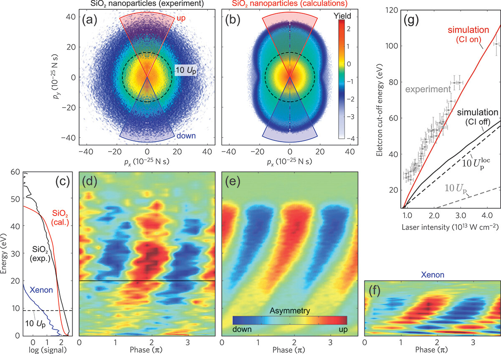

Understand the fundamental differences between strong-field interactions in gases and solids.
Explain the core concepts of intraband and interband dynamics.
Describe the working principles of High-Harmonic Generation (HHG) and Attosecond Transient Absorption (ATAS) spectroscopy in solids.
Analyze key experimental results.
Recognize the unique role of nanostructures in modifying and enhancing strong-field phenomena.
🔍 Prerequisites
This lecture assumes a basic understanding of solid-state physics (energy bands, Brillouin zones), quantum mechanics (tunneling, wave-particle duality), and the principles of attosecond science in atomic systems (the three-step model).
1. The New Frontier: From Atoms to Solids
Before we begin, consider: Why would a physicist want to blast a solid crystal with an incredibly intense laser pulse, similar to what's done with single atoms?
▶
While strong-field physics began with single atoms, extending these techniques to condensed matter opens up a new world of possibilities. Solids are not just a collection of atoms; their periodic lattice structure creates electronic bands, collective behaviors like plasmons, and exotic quantum phenomena such as topology and strong electron correlations. Understanding how electrons behave in this complex environment on their natural, attosecond timescale is fundamental. Furthermore, the dream of controlling these electrons with the oscillating field of light could lead to petahertz electronics—signal processing thousands of times faster than today's gigahertz technology.
The key shift in thinking is from an electron escaping an isolated Coulomb potential to an electron being promoted between energy bands and driven through a periodic potential landscape. This change in the "playground" for the electron is what makes the physics so rich and different from the gas phase.
2. Core Concepts: How Strong Fields Drive Electrons in Solids
Before we begin, consider: When an electron in a solid is hit by a strong laser pulse, does it move within its energy band or does it jump to a different one? Or both?
▶
The answer is both, and this distinction is the most important concept in solid-state strong-field physics. The electron's response is a coherent combination of two fundamental processes: interband and intraband dynamics.
Interband Dynamics involve an electron making a quantum leap from one energy band to another, typically from the valence band (VB) to the conduction band (CB). This is the solid-state analog of ionization. At high field strengths, this happens via Zener tunneling, where the laser field effectively "tilts" the bands so steeply that the energy gap becomes a narrow barrier the electron can tunnel through. Later, the electron can recombine with the hole left in the VB, emitting a high-energy photon.
Intraband Dynamics describe the motion of an electron (or hole) within a single band. This motion is governed by the Bloch acceleration theorem, which states that the electron's crystal momentum, $\mathbf{k}$, changes in response to the electric field, $\mathbf{E}(t)$:
$$ \hbar \frac{d\mathbf{k}(t)}{dt} = -e \mathbf{E}(t) $$
Because the energy bands in a solid are not simple parabolas, this acceleration leads to a highly nonlinear current. An electron can even be driven to the edge of the Brillouin zone and effectively "diffract," reversing its velocity—a process called a Bloch oscillation. This intraband current is a powerful source of high-harmonic light.

1
Intraband Current: An electron in the conduction band is accelerated by the laser field. Because the band is not a simple parabola, this motion creates a nonlinear current that emits high-order harmonics. This mechanism has no direct analog in atomic HHG.
2
Interband Recombination: An electron from the conduction band recombines with a hole in the valence band, emitting a high-energy photon. This is analogous to the recombination step in the atomic three-step model.
3
Atomic HHG: The classic three-step model: (1) Tunneling ionization, (2) Acceleration in the vacuum, (3) Recombination with the parent ion. Note the electron travels much farther from the core than in a solid.
Figure 1: A comparison of the microscopic mechanisms for High-Harmonic Generation (HHG) in solids (top) and atoms (bottom), shown in both real space and momentum space. Solids have two primary channels: the intraband current and interband recombination.
💡 The Keldysh Parameter: Tunneling vs. Multiphoton
How do we know if an electron will tunnel or absorb multiple photons? The Keldysh adiabaticity parameter, $\gamma$, gives us the answer. For a direct-bandgap solids with a bandgap of $E_{\mathrm{g}}$,
$$ \gamma = \frac{\omega_\mathrm{L} \sqrt{2m^* E_{\mathrm{g}}}}{e E_0}, $$
where $e' is the elementary charge, $E_0$ is the amplitude of the electric field, $\omega_\mathrm{L}$ is its frequency, and $m^*$ is the effective reduced mass for an electron-hole pair.
If $\gamma \gg 1$ (e.g., weaker fields, higher frequencies), the field oscillates too quickly for the electron to tunnel. The process is diabatic, and we are in the multiphoton regime.
If $\gamma \ll 1$ (e.g., very strong, low-frequency fields), the field varies slowly compared to the electron's dynamics. The process is adiabatic, and we are in the tunneling regime. This is the regime crucial for lightwave electronics, as it allows for current injection within a fraction of a light cycle.
Figure 2: The regimes of electronics. At low frequencies and field strengths (bottom left), we have conventional electronics. In the optical domain (top), we can have either photon-driven processes (where the cycle-averaged intensity matters) or field-driven processes (where the instantaneous electric field controls the current). The transition is governed by the Keldysh parameter, $\gamma$. Petahertz electronics operates in the field-driven regime where $\gamma < 1$.
3. The Main Experimental Techniques
Before we begin, consider: If you have an attosecond XUV pulse, how could you use it to "take a picture" of what electrons are doing inside a solid that is being shaken by an intense infrared laser pulse?
▶
We have two powerful, all-optical techniques that are complementary: High-Harmonic Generation (HHG) Spectroscopy and Attosecond Transient Absorption/Reflection Spectroscopy (ATAS/ATRS). They both provide attosecond time resolution but look at the system from different angles.
High-Harmonic Generation (HHG) Spectroscopy
In HHG spectroscopy, we don't use an external probe pulse. The system probes itself! An intense IR laser pulse drives the electron dynamics (the interband and intraband currents described earlier). These dynamics then cause the solid to emit its own light at high harmonics of the driving frequency. By analyzing the spectrum, polarization, and phase of this emitted harmonic light, we can reconstruct the electron dynamics that created it. It's like listening to the "scream" of the electrons as they are violently accelerated by the field.
This is a classic pump-probe technique. An intense IR pump pulse initiates the dynamics in the solid. A precisely delayed attosecond XUV probe pulse is then sent through (ATAS) or reflected off (ATRS) the sample. The XUV photons are chosen to have enough energy to excite electrons from deep, localized core levels into the now-dynamic valence and conduction bands. By measuring how the absorption of the XUV probe changes as a function of the pump-probe delay, we can map the electron dynamics with attosecond resolution and element specificity. It's like taking a series of snapshots of the electronic structure as it evolves in time.

1
HHG (Panel a): A single strong "ultrafast beam" drives all the dynamics: (1) tunneling, (2) acceleration, and (3) recombination, leading to the emission of HHG light from both interband and intraband currents. It is a self-probing process.
2
ATAS (Panel b): A strong IR "pump beam" initiates the dynamics. A separate, time-delayed attosecond "XUV" pulse probes the system by exciting an inner-shell (IS) electron. The absorption of this XUV light reveals the state of the conduction band (CB).
Figure 4: The complementary mechanisms of HHG spectroscopy (left) and Attosecond Transient Spectroscopy (right). HHG is an emission-based technique driven by a single strong field, while ATAS/ATRS is a pump-probe absorption technique.
4. Case Study: Towards Petahertz Electronics
Before we begin, consider: Normally, the current from a photodiode depends on the intensity (power) of the light. How could you make a current that depends on the light's electric field itself, including its direction?
▶
The key is to operate in the tunneling regime ($\gamma \ll 1$), where charge carriers are injected into the conduction band on a timescale much shorter than a single optical cycle. If the laser pulse is only a few cycles long, its electric field waveform is asymmetric. For example, a "cosine-like" pulse has a strong central peak, while a "sine-like" pulse has zero field at its center but strong fields on either side.
Because the tunneling rate is extremely sensitive to the instantaneous electric field strength, an asymmetric waveform will inject more electrons during the stronger half-cycles. This creates a net flow of charge—a residual current—whose direction and magnitude can be controlled by the light's waveform. The parameter that controls this asymmetry is the carrier-envelope phase (CEP).
Pioneering experiments on dielectrics like fused silica ($\text{Si} \text{O}_2$) showed exactly this effect. By placing a thin sample between two electrodes, researchers measured a net current that oscillated sinusoidally as the CEP of the few-cycle laser pulse was varied. This demonstrated that the electric field of light could be used as an ultrafast "gate" to directly drive and control a current, forming the fundamental building block of petahertz electronics.

Figure 6: Direct control of current with the light field. The measured current across a metal-dielectric-metal interface shows a clear sinusoidal dependence on the carrier-envelope phase (CEP), proving that the current is driven by the field's waveform, not just its intensity envelope. This experiment is a cornerstone of lightwave electronics.
5. Special Topic: The World of Nanostructures
Before we begin, consider: We've discussed isolated atoms and bulk crystals. What new physics might emerge if we study an object in between—a tiny sphere only a few hundred nanometers in diameter?
▶
Nanostructures, like dielectric nanospheres or metallic nanotips, introduce a fascinating new ingredient: the interplay between strong-field physics and plasmonic near-field enhancement. These structures act like nanoscale antennas, concentrating the incident laser field into tiny "hot spots" near their surface.
Near-Field Enhancement
The local electric field at the surface of a nanostructure can be many times stronger than the incident laser field. This means we can reach the strong-field regime (and even tunnel-ionize wide-bandgap dielectrics!) using much lower laser intensities. The field is also highly inhomogeneous, decaying rapidly away from the surface.

Figure 7: Simulation of the electric field enhancement around a 150-nm gold nanorod at its plasmon resonance. The field at the tips is over 25 times stronger than the incident laser field, creating "hot spots" where strong-field physics can occur.
Consequences for Electron Dynamics
This enhanced, localized near-field fundamentally changes the electron's trajectory after it's emitted:
Surface Rescattering: The electron is born in the near-field and can be driven back to the nanosphere's surface, where it scatters. The maximum kinetic energy of these rescattered electrons scales with the local, enhanced field, leading to much higher electron energies than would be expected from the incident laser intensity alone.
Charge Interaction and TRAB: At high intensities, so many electrons are emitted that the nanosphere becomes significantly positively charged. This creates a powerful static "trapping field". An electron that recollides with the surface is now accelerated not only by the laser field but also by this attractive trapping field, gaining even more energy in a process called Trapping-Field Assisted Backscattering (TRAB).

Figure 8: A typical photoelectron energy spectrum from a nanosphere. The spectrum features a high-energy plateau that extends to a cutoff energy far beyond what would be expected from direct emission. This plateau is the signature of electrons that have rescattered off the nanoparticle surface. The cutoff energy provides a direct measure of the local, enhanced field strength.
Conclusion & Outlook
Key Takeaways from Today's Lecture 🚀
Strong-field physics in condensed matter is a rich field where the laser interacts with electrons in a periodic potential, leading to an interplay of interband and intraband dynamics.
We can probe these dynamics on attosecond timescales using two main all-optical tools: HHG spectroscopy (measuring emitted light) and ATAS/ATRS (measuring absorbed light).
These techniques have provided unprecedented insight into fundamental material properties.
Controlling electron currents with the waveform of light itself has laid the foundation for future petahertz electronics.
Nanostructures act as optical antennas, creating enhanced near-fields that open up new regimes of strong-field physics, such as surface rescattering and charge-interaction-driven acceleration.
The convergence of condensed matter physics, quantum optics, and ultrafast science is pushing the frontiers of how we understand and control the quantum world. Future directions include exploring attomagnetism, complex quantum materials, and developing the first real-world lightwave electronic devices.